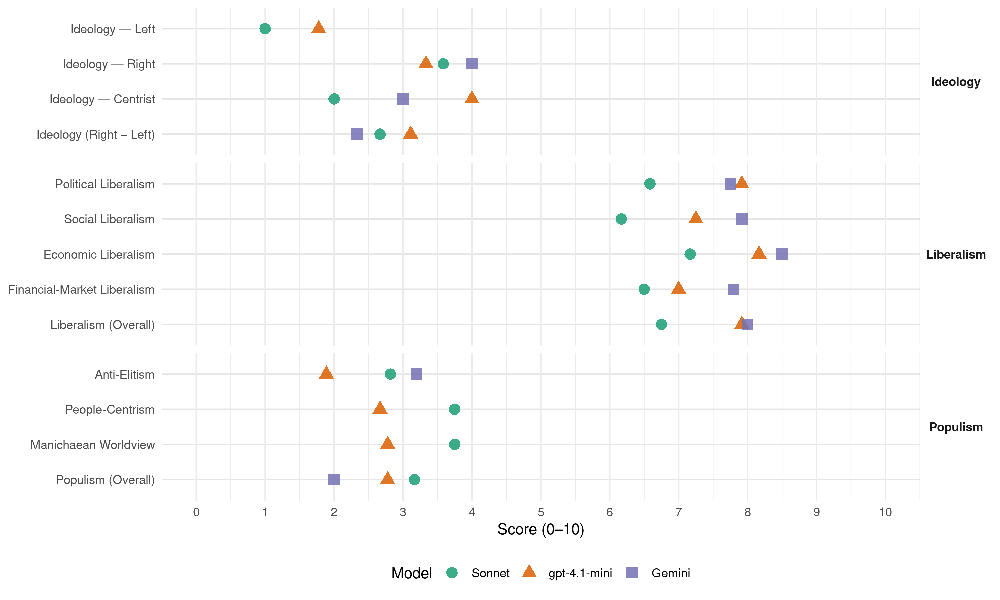

LNP (Australia, 2022)
manifesto_id 63621_202205
Get full text: This site shows derived annotations and short verbatim quotes only. The full manifesto text is © Manifesto Project / WZB — obtain it via manifesto-project.wzb.eu using the manifesto_id above.
Headline scores
| Dimension | Sonnet | gpt-4.1-mini | Gemini |
|---|---|---|---|
| Populism (Overall) | 3.2 | 2.8 | 2.0 |
| Anti-Elitism | 2.8 | 1.9 | 3.2 |
| People-Centrism | 3.8 | 2.7 | – |
| Manichaean Worldview | 3.8 | 2.8 | – |
| Ideology (Right − Left) | 2.7 | 3.1 | 2.3 |
| Liberalism (Overall) | 6.8 | 7.9 | 8.0 |
| Political Liberalism | 6.6 | 7.9 | 7.8 |
| Social Liberalism | 6.2 | 7.2 | 7.9 |
| Economic Liberalism | 7.2 | 8.2 | 8.5 |
| Financial-Market Liberalism | 6.5 | 7.0 | 7.8 |
Evidence per dimension
Economic Liberalism
Gemini · score 9.0 · verified · chunk 1
“led by the private sector”
drive sustainable growth and job creation – led by the private sector– ensuring Australia is well placed
Gemini · score 8.0 · verified · chunk 2
“supports mining investment and jobs”
business environment that supports mining investment and jobs in new resources and
Gemini · score 9.0 · verified · chunk 3
“securing new Free Trade Agreements”
growth of WA’s primary industries including securing new Free Trade Agreements with the UK, India, Regional Comprehensive Economic Partnership
Gemini · score 8.0 · verified · chunk 4
“cut to the corporate tax rate”
small companies benefitting from our permanent cut to the corporate tax rate – 25 per cent down
Gemini · score 9.0 · verified · chunk 5
“permanent reduction in the company tax rate”
These include around 55,000 small companies that have received a permanent reduction in the company tax rate, from 30 per cent under Labor to 25 per cent under the Coalition Government.
Gemini · score 9.0 · verified · chunk 6
“lowest small business tax rate in over 50 years”
Our Government has delivered the lowest small business tax rate in over 50 years, reducing the rate from 30 per cent in 2013-14 to 25 per cent in 2021-22.
Gemini · score 8.0 · verified · chunk 7
“diversifying and expanding our markets, signing trade agreements”
We are also diversifying and expanding our markets, signing trade agreements with Indonesia, India, Hong Kong,
Gemini · score 9.0 · verified · chunk 8
“pursue new free trade agreements with”
United Kingdom and India. continue to pursue new free trade agreements with the European Union, European Free Trade
Gemini · score 9.0 · verified · chunk 9
“permanent cut to the corporate tax rate”
family businesses, including 11,500 benefiting from our permanent cut to the corporate tax rate – 25 per cent down
Gemini · score 8.0 · verified · chunk 10
“businesses and private investment that grow our economy”
Only the Coalition Government understands that it is businesses and private investment that grow our economy and create jobs. That’s why
Gemini · score 8.0 · verified · chunk 11
“lower taxes that reward effort and aspiration”
Only the Coalition delivers the lower taxes that reward effort and aspiration – and bring cost of living
Gemini · score 8.0 · verified · chunk 12
“lower taxes for around 305,000 small and family businesses”
average full-time income earner (around $90,000) more than $2,500 better off in 2021-22 as a result of our tax cuts. That’s more than $50 a week. Lower taxes for around 305,000 small and family businesses in Greater Western Sydney, including over 120,000
gpt-4.1-mini · score 8.0 · verified · chunk 1
“keeping taxes low, supporting private investment and creating jobs”
Our Economic and Fiscal Strategy is built on stabilising and then reducing gross and net debt as a share of the economy, controlling expenditure growth, supporting revenue growth through policies that drive earnings and economic growth, while maintaining a tax-to-GDP ratio at or below 23.9 per cent of GDP, and using the Government’s balance sheet to support productivity-enhancing investments that build a stronger economy, support private investment and create jobs.
gpt-4.1-mini · score 8.0 · verified · chunk 2
“Lower taxes for more than 365,000 WA small and family businesses”
Lower taxes for more than 365,000 WA small and family businesses, including more than 90,000 WA small companies employing over half a million people benefiting from the permanent reduction in the corporate tax rate from 30 per cent to 25 per cent.
gpt-4.1-mini · score 9.0 · verified · chunk 3
“Lower taxes for more than 365,000 WA small and family businesses”
Lower taxes for more than 365,000 WA small and family businesses, including more than 90,000 WA small companies employing over half a million people benefiting from the permanent reduction in the corporate tax rate from 30 per cent to 25 per cent.
gpt-4.1-mini · score 8.0 · verified · chunk 4
“More than $4.5 billion committed to transport infrastructure since 2013 for 98 projects”
More than $4.5 billion committed to transport infrastructure since 2013 for 98 projects, with 52 already completed. Major projects include upgrades to the Bass Highway including the Marrawah to Wynyard Upgrade and the Cooee to Wynyard upgrade.
gpt-4.1-mini · score 8.0 · verified · chunk 5
“The Australian National Aged Care Classification (AN-ACC) funding model aligns the care needs of each resident, and increases funding to regional, rural and remote services and those supporting vulnerable groups.”
The Government accepts the Royal Commission recommendation for nurses on-site 24/7 and the timing of a phased implementation, with $3.9 billion for the first stage starting in October this year. We are driving reforms through a new funding model that focuses on the care requirements of residents, and funds the provider to respond to those needs. The Australian National Aged Care Classification (AN-ACC) funding model aligns the care needs of each resident, and increases funding to regional, rural and remote services and those supporting vulnerable groups.
gpt-4.1-mini · score 9.0 · verified · chunk 6
“delivering lower, fairer and simpler taxes, to support our economic recovery”
The Morrison Government is delivering lower, fairer and simpler taxes, to support our economic recovery and ensure Australians keep more of what they earn.
gpt-4.1-mini · score 7.0 · verified · chunk 7
“free trade deals with the United Kingdom and India”
delivering increased market opportunities for our food and fibre exporters through the entry into force of free trade deals with the United Kingdom and India.
gpt-4.1-mini · score 8.0 · verified · chunk 8
“Lower taxes for small businesses Delivered small business tax relief, supporting 3.4 million small businesses”
Lower taxes for small businesses Delivered small business tax relief, supporting 3.4 million small businesses employing over 7 million Australians. Expanded the successful Instant Asset Write Off. Over 99 per cent of businesses are able to write off the full value of any eligible asset they purchase for their business.
gpt-4.1-mini · score 8.0 · verified · chunk 9
“Lower taxes for around 32,000 Central Coast small and family businesses”
Lower taxes for around 32,000 Central Coast small and family businesses, including 11,500 benefiting from our permanent cut to the corporate tax rate – 25 per cent down from 30 per cent.
gpt-4.1-mini · score 9.0 · verified · chunk 10
“lower taxes for workers and small businesses”
The Coalition Government is committed to additional tax and cost of living relief that will help Northern Australian families and retirees pay their bills, buy their groceries and fill up their car. These measures build on our substantial cost of living action to date. Our Personal Income Tax Plan means workers earning around $60,000 per year are more than $2,500 better off – or around $50 a week – in 2021-22, compared to Labor in 2013-14.
gpt-4.1-mini · score 8.0 · verified · chunk 11
“$100 billion in permanent tax relief to more than 13 million Australians over the next four years”
A re-elected Coalition Government will: Ensure Australians keep more of what they earn with an additional $100 billion in permanent tax relief to more than 13 million Australians over the next four years. Lower taxes and keeping more of what you earn Only the Coalition delivers the lower taxes that reward effort and aspiration – and bring cost of living relief.
gpt-4.1-mini · score 8.0 · verified · chunk 12
“More than $48.5 billion committed to road and rail infrastructure”
More than $48.5 billion committed to road and rail infrastructure in NSW since 2013, with over 106 projects already completed. Major projects in Greater Western Sydney include: $1.5 billion plus a $2 billion concessional loan towards the $16.8 billion WestConnex.
Sonnet · score 7.0 · verified · chunk 1
“keeping taxes below 23.9 per cent of GDP”
Keeping taxes below 23.9 per cent of GDP places a discipline on spending and ensures higher taxes do not stifle investment, workforce participation and economic growth.
Sonnet · score 7.0 · verified · chunk 2
“stable tax settings, streamlined regulatory processes”
promote Australia’s resources sector as the best place to invest based on stable tax settings, streamlined regulatory processes, a flexible and fair industrial relations system
Sonnet · score 8.0 · verified · chunk 3
“lower taxes and lower unemployment for WA”
A choice between an economic plan that will deliver lower taxes and lower unemployment for WA, and a Labor Opposition with a track record of higher unemployment, higher interest rates and higher taxes.
Sonnet · score 7.0 · verified · chunk 4
“new free trade agreements with the UK and India”
Boost agricultural trade opportunities via our new free trade agreements with the UK and India. We will also reduce the cost and time of exporting for Tasmanian food and fibre industries.
Sonnet · score 7.0 · verified · chunk 5
“lowest small business tax rate in over 50 years”
Our Government has delivered the lowest small business tax rate in over 50 years, reducing the rate from 30 per cent in 2013-14 to 25 per cent in 2021-22. Around 3.6 million small businesses have benefited.
Sonnet · score 8.0 · verified · chunk 6
“lowest small business tax rate in over 50 years”
Our Government has delivered the lowest small business tax rate in over 50 years, reducing the rate from 30 per cent in 2013-14 to 25 per cent in 2021-22.
Sonnet · score 7.0 · verified · chunk 7
“free trade agreements with the European Union”
continuing to pursue new free trade agreements with the European Union, European Free Trade Association and the United Arab Emirates.
Sonnet · score 7.0 · verified · chunk 8
“free trade agreements with the European Union”
continuing to pursue new opportunities through free trade agreements including with the European Union, the United Arab Emirates and the European Free Trade Association.
Sonnet · score 7.0 · verified · chunk 9
“lower taxes for around 32,000 Central Coast small and family businesses”
Lower taxes for around 32,000 Central Coast small and family businesses, including 11,500 benefiting from our permanent cut to the corporate tax rate – 25 per cent down from 30 per cent.
Sonnet · score 7.0 · verified · chunk 10
“stable taxes, reduced red tape”
The Coalition Government has the right settings for the resources sector to invest and expand jobs: stable taxes, reduced red tape and targeted support for skills and apprenticeships
Sonnet · score 7.0 · verified · chunk 11
“lower taxes that reward effort and aspiration”
Only the Coalition delivers the lower taxes that reward effort and aspiration – and bring cost of living relief. Since the start of the pandemic, $40 billion in tax relief has flowed to more than 11 million Australians.
Sonnet · score 7.0 · verified · chunk 12
“lower taxes for Greater Western Sydney workers and businesses”
A choice between an economic plan that will deliver lower taxes for Greater Western Sydney workers and businesses and lower unemployment, and a Labor Party with a track record of higher unemployment
Financial-Market Liberalism
Gemini · score 7.0 · verified · chunk 4
“eligible new farmer’s commercial loan”
Government will guarantee 40 per cent of an eligible new farmer’s commercial loan up to a maximum
Gemini · score 8.0 · verified · chunk 6
“Australian Business Securitisation Fund was established”
In 2019, the $2 billion Australian Business Securitisation Fund was established to invest in securitisations backed by SME loans and issued by smaller banks and non-bank lenders.
Gemini · score 8.0 · verified · chunk 8
“Venture capital deals in Australia are valued”
tax incentives for early-stage investors. Venture capital deals in Australia are valued at more than $2 billion, up
Gemini · score 8.0 · verified · chunk 9
“tax settings we have established or improved to support the startup sector”
Maintain the venture capital tax settings we have established or improved to support the startup sector, including the Early-Stage Innovation Company
Gemini · score 8.0 · verified · chunk 12
“linking our natural capital with financial markets”
improving how we manage and value our natural assets. We’re investing $4.7 million over three years to develop tools for linking our natural capital with financial markets. We’re working with the financial, business and investment
gpt-4.1-mini · score 7.0 · verified · chunk 1
“maintain a AAA credit rating from the three major ratings agencies”
We’ve outperformed all the major advanced economies, and are one of the few countries to maintain a AAA credit rating from the three major ratings agencies.
gpt-4.1-mini · score 7.0 · verified · chunk 2
“Maintaining a business environment that supports mining investment”
Maintaining a business environment that supports mining investment and jobs in new resources and energy projects through stable tax settings - including guaranteeing no mining tax, no carbon tax and no adverse change in fuel tax credit arrangements.
gpt-4.1-mini · score 7.0 · verified · chunk 3
“Ensuring multinationals pay their fair share of tax in Australia”
Ensuring multinationals pay their fair share of tax in Australia continues to be a key priority for the Coalition Government. More than a dozen measures have been put in place to make multinationals pay their fair share.
gpt-4.1-mini · score 7.0 · verified · chunk 4
“The Morrison Government has made 960 new or amended listings on the Pharmaceutical Benefits Scheme (PBS) since 2019”
The Morrison Government has made 960 new or amended listings on the Pharmaceutical Benefits Scheme (PBS) since 2019, and over 2,900 since 2013. We will continue our policy to list all medicines recommended by the medical experts.
gpt-4.1-mini · score 7.0 · verified · chunk 5
“Providers must publish financial reports to increase transparency on funding.”
An additional $3.2 billion has increased the daily basic fee in keeping with the Commission recommendation. Providers must publish financial reports to increase transparency on funding. They must maintain mandatory quality standards and will be subject to a star rating system.
gpt-4.1-mini · score 7.0 · verified · chunk 7
“enforced Australia’s financial sanctions against Russia”
Detecting and stopping financial crime: The Coalition has increased AUSTRAC’s funding and staff by over 50 per cent, boosting its ability to tackle illicit funds and stop money getting to criminals and terrorists, in addition to: enforcing Australia’s financial sanctions against Russia.
gpt-4.1-mini · score 7.0 · verified · chunk 9
“Consumer Data Right reforms”
We have made record investments in telecommunications in regional Australia and are leading the world with our Consumer Data Right reforms. We’ve also focused on ensuring the digital world is safe and secure, because that’s crucial to realising the opportunities of the digital economy.
gpt-4.1-mini · score 7.0 · verified · chunk 11
“investor protection, prudential regulation, and transparency”
PRUDENTIAL rules that ENABLE market function (disclosure, anti-fraud, deposit insurance, fair access for retail/small investors, property/contract enforcement); transparency. CRITICAL: investor protection, prudential regulation, and transparency are PRO-LIBERAL ONLY when they ENABLE market-based finance.
gpt-4.1-mini · score 7.0 · verified · chunk 12
“Record investment in our law enforcement and security agencies”
Record investment in our law enforcement and security agencies, including an extra $1.3 billion for the Australian Security Intelligence Organisation, and boosting the Australian Federal Police’s budget to more than $1.7 billion.
Sonnet · score 6.0 · verified · chunk 1
“AAA credit rating from the three major”
we continue to have lower debt as a share of gross domestic product than many other advanced economies and we remain one of only a few countries to maintain a AAA credit rating from all three major ratings agencies.
Sonnet · score 7.0 · verified · chunk 2
“AAA credit rating from all three major”
Australia is one of a small number of countries to maintain a AAA credit rating from all three major credit rating agencies.
Sonnet · score 7.0 · verified · chunk 3
“Multinational Anti-Avoidance Law and the Diverted Profits Tax”
This includes the Multinational Anti-Avoidance Law and the Diverted Profits Tax. Since July 2016, the ATO has raised $25.8 billion in additional tax from multinationals, large companies and wealthy individuals.
Sonnet · score 7.0 · verified · chunk 4
“low-cost financing for social and affordable dwellings”
Support greater investment into affordable housing with an additional $2 billion in low-cost financing for social and affordable dwellings. This brings total low-cost financing to $5.5 billion.
Sonnet · score 7.0 · verified · chunk 5
“Make it easier for Australian small businesses to access finance”
Level the playing field for small business. Enable more Government procurement opportunities for small business. Open up global opportunities for small business. Make it easier for Australian small businesses to access finance.
Sonnet · score 7.0 · verified · chunk 6
“Make it easier for Australian small businesses to access finance”
Open up global opportunities for small business. Make it easier for Australian small businesses to access finance. Make sure small business owners know they have a Government that will support them through tough times.
Sonnet · score 6.0 · verified · chunk 7
“tackle illicit funds and stop money”
boosting its ability to tackle illicit funds and stop money getting to criminals and terrorists, in addition to: enforcing Australia’s financial sanctions against Russia.
Sonnet · score 6.0 · verified · chunk 8
“lower taxes for hard-working Australians”
support small manufacturers with tax relief and deliver lower taxes for hard-working Australians.
Sonnet · score 7.0 · verified · chunk 9
“Expand Australia’s world-leading Consumer Data Right into energy”
Expand Australia’s world-leading Consumer Data Right into energy, telecommunications, open finance and other sectors, making it easier for consumers and small businesses to take control of their data and get a better deal.
Sonnet · score 6.0 · verified · chunk 10
“attract private investment to the North”
That’s why we established the Northern Australia Infrastructure Facility (NAIF) to attract private investment to the North.
Sonnet · score 6.0 · verified · chunk 11
“freeze deeming rates at current rates”
Our plan to freeze deeming rates at current rates for two years will benefit almost 260,000 payment recipients in NSW, including more than 125,000 age pensioners.
Sonnet · score 6.0 · verified · chunk 12
“linking our natural capital with financial markets”
We’re investing $4.7 million over three years to develop tools for linking our natural capital with financial markets. We’re working with the financial, business and investment sectors
Political Liberalism
Gemini · score 7.0 · verified · chunk 1
“independent Treasury and Finance departments”
The Coalition’s new policies are costed transparently by the independent Treasury and Finance departments.
Gemini · score 7.0 · verified · chunk 2
“federal funding for public hospitals”
concession card holders. Federal funding for public hospitals has nearly doubled – from
Gemini · score 8.0 · verified · chunk 3
“legislating the Online Safety Act”
keep Australians safe online, particularly women and children, by legislating the Online Safety Act and introducing new laws to tackle anonymous trolling
Gemini · score 8.0 · verified · chunk 4
“legislating the Online Safety Act”
safe online online, particularly women and children, by legislating the Online Safety Act and introducing new laws
Gemini · score 8.0 · verified · chunk 5
“understand the basis of our Western democracy”
We fought to ensure that the next generation of Australians will understand the basis of our Western democracy. We fought to improve maths and English standards
Gemini · score 8.0 · verified · chunk 6
“setting a new standard for our parliamentary workplaces”
continue to work across the Parliament implementing the Jenkins recommendations: setting a new standard for our parliamentary workplaces
Gemini · score 8.0 · verified · chunk 7
“protect our sovereignty and our borders, our democracy”
Only the Coalition can be trusted to protect our sovereignty and our borders, our democracy and our way of life.
Gemini · score 8.0 · verified · chunk 8
“protecting Australians online by implementing further”
Youth Hub on the Peninsula and protecting Australians online by implementing further world-leading online safety reforms.
Gemini · score 8.0 · verified · chunk 9
“legislating the Online Safety Act and introducing new laws”
keep Australians safe online, particularly women and children, by legislating the Online Safety Act and introducing new laws to tackle anonymous trolling
Gemini · score 8.0 · verified · chunk 10
“tolerant, multicultural, and multi-faith liberal democracy”
fundamental to who we are and who we must be as a tolerant, multicultural, and multi-faith liberal democracy. The Religious Discrimination Bill provides
Gemini · score 8.0 · verified · chunk 11
“tolerant, multicultural and multi-faith liberal democracy”
fundamental to who we are and who we must be as a tolerant, multicultural and multi-faith liberal democracy. The Religious Discrimination Bill
Gemini · score 7.0 · verified · chunk 12
“legislating tough new anti-trolling laws”
enhance eSafety in schools so they know how to help kids dealing with cyberbullies; and legislating tough new anti-trolling laws. Investing a further $1.3 billion to end violence
gpt-4.1-mini · score 8.0 · verified · chunk 1
“delivered a balanced Budget in 2018-19”
Since coming to government, the Coalition has made steady progress to repair the Budget, delivering a balanced budget in 2018-19, the first time in 11 years. This responsible management meant we had the fiscal firepower when COVID-19 struck.
gpt-4.1-mini · score 8.0 · verified · chunk 2
“Medicare funding to WA having already increased”
Guaranteeing Medicare, with Medicare funding to WA having already increased from $1.5 billion in 2012-13 under Labor to $2.5 billion in 2020-21 under our Government; WA GP bulk billing rates at a record high of 86.8 per cent; and the introduction of permanent telehealth services which have already benefited 400,600 West Australians.
gpt-4.1-mini · score 8.0 · verified · chunk 3
“Australia is one of a small number of countries to maintain a AAA credit rating”
The recent Budget included the biggest turnaround in our finances in over 70 years. Australia is one of a small number of countries to maintain a AAA credit rating from all three major ratings agencies.
gpt-4.1-mini · score 8.0 · verified · chunk 4
“Record investments in our law enforcement and security agencies, including an extra $1.3 billion for the Australian Security Intelligence Organisation”
Providing record investments in our law enforcement and security agencies, including an extra $1.3 billion for the Australian Security Intelligence Organisation and boosting the Australian Federal Police’s annual budget to more than $1.7 billion.
gpt-4.1-mini · score 8.0 · verified · chunk 5
“The Morrison Government has invested $918 million to improve the governance of the aged care sector.”
5. Governance The Morrison Government has invested $918 million to improve the governance of the aged care sector. A new Aged Care Act is being developed which will underpin the once-in-a-generation reform and protect the rights of senior Australians, ensuring respect, care and dignity.
gpt-4.1-mini · score 7.0 · verified · chunk 6
“Australia’s Parliament House and parliamentary workplaces should be exemplars”
Australia’s Parliament House and parliamentary workplaces should be exemplars of workplace practice and culture. Sadly, they’ve been shown to fall short and significant work is underway to change the culture and set new standards following the Foster and Jenkins reviews.
gpt-4.1-mini · score 8.0 · verified · chunk 7
“Only the Coalition can be trusted to protect our sovereignty and our borders, our democracy and our way of life”
Only the Coalition can be trusted to protect our sovereignty and our borders, our democracy and our way of life. Only the Coalition can keep Australia and Australians safe.
gpt-4.1-mini · score 7.0 · verified · chunk 8
“Record funding for NSW schools, up from $4.1 billion in 2013 under Labor to $7.7 billion in 2022”
Record funding for NSW schools, up from $4.1 billion in 2013 under Labor to $7.7 billion in 2022 under our Government. Our investment will hit $10-billion in 2029. Continuing to strongly support innovative and proven pathways into teaching, such as the Teach For Australia program, as well as place more emphasis on prior real work experience when supporting mid-career professionals into teaching.
gpt-4.1-mini · score 8.0 · verified · chunk 9
“Updated Australian Citizenship Test and Australian Values Statement”
We welcomed more than 200,000 new Australian citizens into our Australian family in 2019-20, the highest number on record, and introduced an updated Australian Citizenship Test and Australian Values Statement to strengthen aspiring citizens’ understanding and commitment to our values.
gpt-4.1-mini · score 8.0 · verified · chunk 10
“freedom to practise religious beliefs without discrimination”
The Coalition Government believes that freedom to practise religious beliefs without discrimination is fundamental to who we are and who we must be as a tolerant, multicultural, and multi-faith liberal democracy.
gpt-4.1-mini · score 9.0 · verified · chunk 11
“guaranteeing the long-term future of Medicare by providing Australians with affordable access to universal health care”
Access to free and expert care in our public hospitals underpins our world-class health system. Since coming to office, our Government has doubled funding for public hospitals from $13.3 billion in 2012-13 to about $27.2 billion in 2022-23, growing to $32.7 billion in 2025-26. We are guaranteeing the long-term future of Medicare by providing Australians with affordable access to universal health care. Under our Government, Medicare funding nationwide has increased from $19 billion in 2012-13 under Labor to $31.4 billion in 2022-23.
gpt-4.1-mini · score 8.0 · verified · chunk 12
“Record funding for NSW public hospitals, up from $4.3 billion”
Record funding for NSW public hospitals, up from $4.3 billion in 2012-13 under Labor to an estimated $8.2 billion in 2022-23. Improved local health services, including $65 million for Australia’s first dedicated Cystic Fibrosis Specialist Service at Westmead Hospital; $100 million for Australia’s first Comprehensive Children’s Cancer Centre at Sydney Children’s Hospital (helping children with cancer in Sydney and nationwide); and $5.5 million for community-based drug and alcohol treatment across the Nepean Blue Mountains region.
Sonnet · score 6.0 · verified · chunk 1
“independent Treasury and Finance departments”
The Coalition’s new policies are costed transparently by the independent Treasury and Finance departments.
Sonnet · score 7.0 · verified · chunk 2
“Australian Building and Construction Commission”
abolish the Australian Building and Construction Commission and cave-in to union militancy.
Sonnet · score 7.0 · verified · chunk 3
“legislating the Online Safety Act”
Standing up to social media companies to keep Australians safe online, particularly women and children, by legislating the Online Safety Act and introducing new laws to tackle anonymous trolling.
Sonnet · score 6.0 · verified · chunk 4
“legislating the Online Privacy Bill”
A re-elected Coalition Government will legislate the Online Privacy Bill to better protect Australians’ data and personal information.
Sonnet · score 7.0 · verified · chunk 5
“foundations of our nation as a Western liberal democracy”
Our Australian Curriculum rightly champions Australian values, ensuring students learn Indigenous history and the foundations of our nation as a Western liberal democracy. It respects our ANZAC heritage.
Sonnet · score 6.0 · verified · chunk 6
“legislate the Social Media (Anti-Trolling) laws”
legislate the Social Media (Anti-Trolling) laws to ensure social media companies are held accountable as publishers and Australians are given more power to deal with harmful defamatory comments from anonymous trolls.
Sonnet · score 7.0 · verified · chunk 7
“protect our sovereignty and our borders, our democracy”
Only the Coalition can be trusted to protect our sovereignty and our borders, our democracy and our way of life.
Sonnet · score 6.0 · verified · chunk 8
“world-leading online safety reforms”
Investing in local crime prevention by establishing a new Youth Hub on the Peninsula and protecting Australians online by implementing further world-leading online safety reforms.
Sonnet · score 7.0 · verified · chunk 9
“promote our democratic values”
The strategy will create new trade possibilities for Australia and our region as we work to develop digital trade rules which deliver commercial benefits, promote our democratic values and push back against digital protectionism.
Sonnet · score 7.0 · verified · chunk 10
“freedom to practise religious beliefs without discrimination”
The Coalition Government believes that freedom to practise religious beliefs without discrimination is fundamental to who we are and who we must be as a tolerant, multicultural, and multi-faith liberal democracy.
Sonnet · score 7.0 · verified · chunk 11
“tolerant, multicultural and multi-faith liberal democracy”
The Coalition also believes that freedom to practise religious beliefs without discrimination is fundamental to who we are and who we must be as a tolerant, multicultural and multi-faith liberal democracy.
Sonnet · score 6.0 · verified · chunk 12
“legislating tough new anti-trolling laws”
new measures to ensure tech companies provide stronger parental controls on smartphones and tablet devices; $23 million to enhance eSafety in schools; and legislating tough new anti-trolling laws.
Liberalism (Overall)
Gemini · score 8.0 · verified · chunk 1
“led by the private sector”
drive sustainable growth and job creation – led by the private sector– ensuring Australia is well placed
Gemini · score 8.0 · verified · chunk 2
“supports mining investment and jobs”
business environment that supports mining investment and jobs in new resources and
Gemini · score 8.0 · verified · chunk 3
“securing new Free Trade Agreements”
growth of WA’s primary industries including securing new Free Trade Agreements with the UK, India, Regional Comprehensive Economic Partnership
Gemini · score 8.0 · verified · chunk 4
“cut to the corporate tax rate”
small companies benefitting from our permanent cut to the corporate tax rate – 25 per cent down
Gemini · score 8.0 · verified · chunk 5
“permanent reduction in the company tax rate”
These include around 55,000 small companies that have received a permanent reduction in the company tax rate, from 30 per cent under Labor to 25 per cent under the Coalition Government.
Gemini · score 8.0 · verified · chunk 6
“lowest small business tax rate in over 50 years”
Our Government has delivered the lowest small business tax rate in over 50 years, reducing the rate from 30 per cent in 2013-14 to 25 per cent in 2021-22.
Gemini · score 8.0 · verified · chunk 7
“protect our sovereignty and our borders, our democracy”
Only the Coalition can be trusted to protect our sovereignty and our borders, our democracy and our way of life.
Gemini · score 8.0 · verified · chunk 8
“pursue new free trade agreements with”
United Kingdom and India. continue to pursue new free trade agreements with the European Union, European Free Trade
Gemini · score 8.0 · verified · chunk 9
“permanent cut to the corporate tax rate”
family businesses, including 11,500 benefiting from our permanent cut to the corporate tax rate – 25 per cent down
Gemini · score 8.0 · verified · chunk 10
“tolerant, multicultural, and multi-faith liberal democracy”
fundamental to who we are and who we must be as a tolerant, multicultural, and multi-faith liberal democracy. The Religious Discrimination Bill provides
Gemini · score 8.0 · verified · chunk 11
“lower taxes that reward effort and aspiration”
Only the Coalition delivers the lower taxes that reward effort and aspiration – and bring cost of living
Gemini · score 8.0 · verified · chunk 12
“lower taxes for around 305,000 small and family businesses”
average full-time income earner (around $90,000) more than $2,500 better off in 2021-22 as a result of our tax cuts. That’s more than $50 a week. Lower taxes for around 305,000 small and family businesses in Greater Western Sydney, including over 120,000
gpt-4.1-mini · score 8.0 · verified · chunk 1
“delivering a balanced budget in 2018-19”
Since coming to government, the Coalition has made steady progress to repair the Budget, delivering a balanced budget in 2018-19, the first time in 11 years. This responsible management meant we had the fiscal firepower when COVID-19 struck.
gpt-4.1-mini · score 8.0 · verified · chunk 2
“Guaranteeing Medicare, with Medicare funding to WA having already increased”
Guaranteeing Medicare, with Medicare funding to WA having already increased from $1.5 billion in 2012-13 under Labor to $2.5 billion in 2020-21 under our Government; WA GP bulk billing rates at a record high of 86.8 per cent; and the introduction of permanent telehealth services which have already benefited 400,600 West Australians.
gpt-4.1-mini · score 8.0 · verified · chunk 3
“Lower taxes for more than 365,000 WA small and family businesses”
Lower taxes for more than 365,000 WA small and family businesses, including more than 90,000 WA small companies employing over half a million people benefiting from the permanent reduction in the corporate tax rate from 30 per cent to 25 per cent.
gpt-4.1-mini · score 8.0 · verified · chunk 4
“Record investments in our law enforcement and security agencies, including an extra $1.3 billion for the Australian Security Intelligence Organisation”
Providing record investments in our law enforcement and security agencies, including an extra $1.3 billion for the Australian Security Intelligence Organisation and boosting the Australian Federal Police’s annual budget to more than $1.7 billion.
gpt-4.1-mini · score 8.0 · verified · chunk 5
“Providers must publish financial reports to increase transparency on funding.”
An additional $3.2 billion has increased the daily basic fee in keeping with the Commission recommendation. Providers must publish financial reports to increase transparency on funding. They must maintain mandatory quality standards and will be subject to a star rating system.
gpt-4.1-mini · score 8.0 · verified · chunk 6
“delivering lower, fairer and simpler taxes, to support our economic recovery”
The Morrison Government is delivering lower, fairer and simpler taxes, to support our economic recovery and ensure Australians keep more of what they earn.
gpt-4.1-mini · score 8.0 · verified · chunk 7
“Only the Coalition can be trusted to protect our sovereignty and our borders, our democracy and our way of life”
Only the Coalition can be trusted to protect our sovereignty and our borders, our democracy and our way of life. Only the Coalition can keep Australia and Australians safe.
gpt-4.1-mini · score 7.0 · verified · chunk 8
“Lower taxes for small businesses Delivered small business tax relief, supporting 3.4 million small businesses”
Lower taxes for small businesses Delivered small business tax relief, supporting 3.4 million small businesses employing over 7 million Australians. Expanded the successful Instant Asset Write Off. Over 99 per cent of businesses are able to write off the full value of any eligible asset they purchase for their business.
gpt-4.1-mini · score 8.0 · verified · chunk 9
“Updated Australian Citizenship Test and Australian Values Statement”
We welcomed more than 200,000 new Australian citizens into our Australian family in 2019-20, the highest number on record, and introduced an updated Australian Citizenship Test and Australian Values Statement to strengthen aspiring citizens’ understanding and commitment to our values.
gpt-4.1-mini · score 8.0 · verified · chunk 10
“freedom to practise religious beliefs without discrimination”
The Coalition Government believes that freedom to practise religious beliefs without discrimination is fundamental to who we are and who we must be as a tolerant, multicultural, and multi-faith liberal democracy.
gpt-4.1-mini · score 8.0 · verified · chunk 11
“guaranteeing the long-term future of Medicare by providing Australians with affordable access to universal health care”
Access to free and expert care in our public hospitals underpins our world-class health system. Since coming to office, our Government has doubled funding for public hospitals from $13.3 billion in 2012-13 to about $27.2 billion in 2022-23, growing to $32.7 billion in 2025-26. We are guaranteeing the long-term future of Medicare by providing Australians with affordable access to universal health care.
gpt-4.1-mini · score 8.0 · verified · chunk 12
“Record funding for NSW public hospitals, up from $4.3 billion”
Record funding for NSW public hospitals, up from $4.3 billion in 2012-13 under Labor to an estimated $8.2 billion in 2022-23. Improved local health services, including $65 million for Australia’s first dedicated Cystic Fibrosis Specialist Service at Westmead Hospital; $100 million for Australia’s first Comprehensive Children’s Cancer Centre at Sydney Children’s Hospital (helping children with cancer in Sydney and nationwide); and $5.5 million for community-based drug and alcohol treatment across the Nepean Blue Mountains region.
Sonnet · score 6.0 · verified · chunk 1
“tax-to-GDP ratio at or below 23.9 per cent”
supporting revenue growth through policies that drive earnings and economic growth, while maintaining a tax-to-GDP ratio at or below 23.9 per cent of GDP.
Sonnet · score 7.0 · verified · chunk 2
“lower taxes and lower unemployment for WA”
A choice between an economic plan that will deliver lower taxes and lower unemployment for WA, and a Labor Opposition with a track record of higher unemployment
Sonnet · score 7.0 · verified · chunk 3
“lower taxes and lower unemployment for WA”
A choice between an economic plan that will deliver lower taxes and lower unemployment for WA, and a Labor Opposition with a track record of higher unemployment, higher interest rates and higher taxes.
Sonnet · score 7.0 · verified · chunk 4
“lower taxes for around 63,000 Tasmanian small and family businesses”
Lower taxes for around 63,000 Tasmanian small and family businesses, including 13,500 small companies benefitting from our permanent cut to the corporate tax rate – 25 per cent down from 30 per cent.
Sonnet · score 7.0 · verified · chunk 5
“lowest small business tax rate in over 50 years”
Our Government has delivered the lowest small business tax rate in over 50 years, reducing the rate from 30 per cent in 2013-14 to 25 per cent in 2021-22. Around 3.6 million small businesses have benefited.
Sonnet · score 7.0 · verified · chunk 6
“cutting taxes, deregulation, free trade agreements”
The Coalition Government has finalised 11 free trade agreements (FTAs) since 2013, lifting the share of Australia’s trade covered by FTAs from 27 per cent in 2013 to around 78 per cent now.
Sonnet · score 7.0 · verified · chunk 7
“free trade deals with the United Kingdom”
deliver new market access opportunities for our agriculture and fisheries sector through the entry into force of our free trade deals with the United Kingdom and India.
Sonnet · score 6.0 · verified · chunk 8
“competitive tax settings”
Our economic plan includes: Competitive tax settings Record investments in our workforce and infrastructure Support for affordable, reliable energy World-class research aligned to our National Manufacturing Priorities
Sonnet · score 7.0 · verified · chunk 9
“Free trade is a strong element of the Coalition’s economic plan”
Free trade is a strong element of the Coalition’s economic plan. Our Government has been at the forefront of opening up digital trade opportunities for Australian businesses.
Sonnet · score 7.0 · verified · chunk 10
“stable taxes, reduced red tape”
The Coalition Government has the right settings for the resources sector to invest and expand jobs: stable taxes, reduced red tape and targeted support for skills and apprenticeships
Sonnet · score 7.0 · verified · chunk 11
“lower taxes that reward effort and aspiration”
Only the Coalition delivers the lower taxes that reward effort and aspiration – and bring cost of living relief. Since the start of the pandemic, $40 billion in tax relief has flowed to more than 11 million Australians.
Sonnet · score 6.0 · verified · chunk 12
“responsible financial management that has delivered”
A choice between responsible financial management that has delivered the biggest Budget turnaround in 70 years, and a Labor Party that can’t manage money.
Anti-Elitism
Gemini · score 3.0 · verified · chunk 4
“team of union officials and political operatives”
Labor’s team of union officials and political operatives just doesn’t get the economy.
Gemini · score 3.0 · verified · chunk 5
“Labor’s approach looks more like a return to the politically driven policy”
with no guidelines and no transparent process. Yet Labor is already picking and choosing who they will invite, in safe Labor seats, to benefit from the program. Labor’s approach looks more like a return to the politically driven policy that led to the school halls disaster last time they were in Government
Gemini · score 3.0 · verified · chunk 6
“put their union mates in charge”
Labor will increase red tape and put their union mates in charge of small businesses.
Gemini · score 4.0 · verified · chunk 8
“team of union officials and political operatives”
manage money. Labor’s team of union officials and political operatives just doesn’t get the economy.
Gemini · score 3.0 · verified · chunk 9
“too weak to stand up to the Greens and the unions”
Albanese would be too weak to stand up to the Greens and the unions. Labor’s team of union officials
gpt-4.1-mini · score 2.0 · verified · chunk 1
“Labor can’t manage money”
Labor can’t manage money. And when they run out of money, they come after yours. Only the Coalition has a plan for a strong economy and a stronger future.
gpt-4.1-mini · score 2.0 · verified · chunk 2
“Labor has no economic plan”
Labor has no economic plan. Over the last 30 years, Labor Governments have, on average, delivered higher unemployment, higher interest rates and higher electricity prices. And not a single balanced budget. Labor has already promised to spend $81 billion more on policies throughout the pandemic.
gpt-4.1-mini · score 2.0 · verified · chunk 3
“Labor has no economic plan for Western Australia”
The Risk of Labor There is a clear choice at this election. A choice between the Coalition Government that is delivering a strong economy in WA and a Labor Opposition that would weaken it. A choice between responsible financial management that has delivered the biggest Budget turnaround in 70 years, and a Labor Opposition that can’t manage money. A choice between an economic plan that will deliver lower taxes and lower unemployment for WA, and a Labor Opposition with a track record of higher unemployment, higher interest rates and higher taxes. Labor has no economic plan for Western Australia, or the rest of the country.
gpt-4.1-mini · score 2.0 · verified · chunk 4
“Labor’s team of union officials and political operatives just doesn’t get the economy”
Labor’s team of union officials and political operatives just doesn’t get the economy. When Labor was last in power, supported by the Greens, Tasmanians suffered more than most.
gpt-4.1-mini · score 2.0 · verified · chunk 6
“Labor’s team of union officials and political operatives just doesn’t get the economy”
Mr Albanese would be too weak to stand up to the Greens, to the unions, or for Australia’s national interest. Labor’s team of union officials and political operatives just doesn’t get the economy. Mr Albanese is the most left wing leader of the Labor Party in living memory.
gpt-4.1-mini · score 1.0 · verified · chunk 7
“Labor can’t manage money”
Labor can’t manage money, which is why they have argued for higher taxes, including on families. Labor can’t manage money, which is why they couldn’t list life-changing medications on the PBS last time they were in government.
gpt-4.1-mini · score 2.0 · verified · chunk 8
“Labor’s team of union officials and political operatives just doesn’t get the economy”
Labor’s team of union officials and political operatives just doesn’t get the economy. They certainly don’t understand regional Australia. They have already promised unnecessary new regulations on contractors and labour hire, have a stated position to end live sheep exports and have failed to support the Australian Agriculture Visa.
gpt-4.1-mini · score 2.0 · verified · chunk 9
“Labor’s team of union officials and political operatives just doesn’t get the economy”
Labor would be a risk to Australia’s manufacturing industry and they have no plan for supply chain resilience. Labor’s team of union officials and political operatives just doesn’t get the economy. Mr Albanese has never held a financial portfolio.
gpt-4.1-mini · score 2.0 · verified · chunk 12
“Labor leader Albanese has never held a financial portfolio”
Labor leader Albanese has never held a financial portfolio, he’s never held a national security portfolio and he’s never delivered a budget. Albanese would be too weak to stand up to the Greens and the unions.
Sonnet · score 2.0 · verified · chunk 1
“Labor can’t manage money”
The truth is, Labor can’t manage money. That means higher deficits, higher debt, higher interest rates, higher costs of living and higher taxes.
Sonnet · score 4.0 · mixed · chunk 2
“Labor can’t manage money”
There is a clear choice at this election. Labor can’t be trusted on health, because they can’t manage money.
Sonnet · score 3.0 · verified · chunk 3
“Labor can’t manage money”
A choice between responsible financial management that has delivered the biggest Budget turnaround in 70 years, and a Labor Opposition that can’t manage money.
Sonnet · score 3.0 · verified · chunk 4
“Labor’s team of union officials and political operatives”
Labor has no economic plan for Tasmania, or the rest of the country. Labor’s team of union officials and political operatives just doesn’t get the economy.
Sonnet · score 3.0 · verified · chunk 5
“Labor can’t manage money”
Labor’s poorly developed policies in response to the COVID pandemic would have cost Australian taxpayers an extra $81 billion and increased the budget deficit by 20 per cent. Labor can’t manage money. That’s why they always come after yours.
Sonnet · score 3.0 · verified · chunk 6
“Labor’s team of union officials and political operatives”
This election is a choice between the Coalition Government that is delivering a strong economy and a stronger future for the tourism industry, or Labor’s team of union officials and political operatives who just don’t get the tourism economy.
Sonnet · score 3.0 · verified · chunk 7
“Labor can’t manage money”
Labor has no economic plan. Labor can’t manage money, which is why they have argued for higher taxes, including on families.
Sonnet · score 3.0 · verified · chunk 8
“Labor’s team of union officials and political operatives”
Labor’s team of union officials and political operatives just doesn’t get the economy. They certainly don’t understand regional Australia.
Sonnet · score 3.0 · verified · chunk 9
“Labor’s team of union officials and political operatives”
Labor’s team of union officials and political operatives just doesn’t get the economy. Mr Albanese has never held a financial portfolio.
Sonnet · score 2.0 · verified · chunk 10
“Labor can’t manage money”
Labor has no economic plan. Labor can’t manage money, which puts at risk the essential services like health and schools which make Australia great.
Sonnet · score 3.0 · verified · chunk 11
“Labor can’t manage money”
In stark contrast, Labor has no plan to reduce the cost of living and no economic plan for Australia. Labor can’t manage money. This puts at risk the essential services Australians rely on
Sonnet · score 3.0 · verified · chunk 12
“Labor’s team of union officials and political operatives”
Albanese would be too weak to stand up to the Greens and the unions. Labor’s team of union officials and political operatives just doesn’t get the economy.
Ideology — Centrist
Gemini · score NA · no_evidence · chunk 4
“team of union officials and political operatives”
Labor’s team of union officials and political operatives just doesn’t get the economy.
Gemini · score 3.0 · verified · chunk 5
“Labor’s approach looks more like a return to the politically driven policy”
with no guidelines and no transparent process. Yet Labor is already picking and choosing who they will invite, in safe Labor seats, to benefit from the program. Labor’s approach looks more like a return to the politically driven policy that led to the school halls disaster last time they were in Government
gpt-4.1-mini · score 4.0 · verified · chunk 1
“Only the Coalition has a plan for a strong economy and a stronger future”
Only the Coalition has a plan for a strong economy and a stronger future. Under our strong economic management, we are: Enabling Australians to keep more of what they earn, with an additional $100 billion in permanent tax relief over the next four years.
gpt-4.1-mini · score 4.0 · verified · chunk 2
“The choice is clear”
The choice is clear. The Coalition Government will keep our economy strong, and continue with record jobs growth so more Australians can save for a home and pay their mortgage.
gpt-4.1-mini · score 5.0 · verified · chunk 3
“A clear choice at this election”
The Risk of Labor There is a clear choice at this election. A choice between the Coalition Government that is delivering a strong economy in WA and a Labor Opposition that would weaken it.
gpt-4.1-mini · score 4.0 · verified · chunk 4
“Tasmanians can trust the Coalition Government’s strong record on security”
Tasmanians can trust the Coalition Government’s strong record on security. Labor’s record is cuts to Defence spending and cuts to our law enforcement agencies.
gpt-4.1-mini · score 2.0 · verified · chunk 7
“Only the Coalition can be trusted”
Only the Coalition can be trusted to protect our sovereignty and our borders, our democracy and our way of life. Only the Coalition can keep Australia and Australians safe.
gpt-4.1-mini · score 4.0 · verified · chunk 8
“Only the Coalition has a plan for agriculture and fishing industries”
Only the Coalition Government has a plan for agriculture and fishing industries – a plan that will help our primary industries achieve their goal of reaching $100 billion output by 2030. Our plan is focused on seven key elements: Stronger trade and exports. Protection against pests and disease. Better productivity and a better environment.
gpt-4.1-mini · score 6.0 · verified · chunk 9
“A choice between the Coalition Government that is delivering a strong economy and a Labor Party that would weaken it”
There is a clear choice at this election. A choice between the Coalition Government that is delivering a strong economy and a Labor Party that would weaken it. A choice between responsible financial management that has delivered the biggest Budget turnaround in 70 years, and a Labor Party that can’t manage money.
gpt-4.1-mini · score 3.0 · verified · chunk 12
“The Australian people have the choice between the Coalition”
The Australian people have the choice between the Coalition that is delivering a strong economy and the stronger investment our environment needs, and a Labor Party that stands for higher taxes, more regulation and a less secure environmental future.
Sonnet · score 2.0 · verified · chunk 1
“choice between the Coalition Government”
The Australian people have the choice between the Coalition Government that is delivering a strong economy and a stronger future or Anthony Albanese’s Labor Party
Sonnet · score 2.0 · verified · chunk 2
“delivering a strong economy and a stronger future”
The Australian people have the choice between the Morrison Government that is delivering a strong economy and a stronger future or Anthony Albanese’s Labor Party
Sonnet · score 2.0 · verified · chunk 3
“backing locally-led solutions, combined with”
We’re backing locally-led solutions, combined with what we know works. Crime is increasing in Alice Springs.
Sonnet · score 2.0 · verified · chunk 4
“strong economic management”
With our strong economic management, we are building the stronger economy that guarantees essential services and keeps Tasmanians safe.
Sonnet · score 2.0 · verified · chunk 5
“backbone of our economy”
Small and family businesses are the backbone of our economy. The Morrison Government is supporting small business operators so they can focus on doing what they do best.
Sonnet · score 2.0 · verified · chunk 6
“This is not the time to change course”
Labor can’t manage money. That’s why they always come after yours. This is not the time to change course. This is the time to stick to the Morrison Government’s plan.
Sonnet · score 2.0 · verified · chunk 7
“keeping Australians safe”
Only the Coalition can be trusted to protect our sovereignty and our borders, our democracy and our way of life. Only the Coalition can keep Australia and Australians safe.
Sonnet · score 2.0 · verified · chunk 8
“Only the Coalition understands the importance”
Only the Coalition understands the importance of the agriculture and fisheries sector and their importance to regional Australia, regional communities and our economy.
Sonnet · score 2.0 · verified · chunk 9
“delivering a strong economy for the Central Coast”
A choice between the Coalition Government that is delivering a strong economy for the Central Coast and a Labor Party that would weaken it.
Sonnet · score 2.0 · verified · chunk 10
“Only the Coalition has a vision”
Only the Coalition has a vision and a plan to turbocharge the nation’s economic growth by unlocking the great potential and opportunities of Northern Australia.
Sonnet · score 2.0 · verified · chunk 11
“more Australians are in work than ever before”
On almost every economic measure – including economic growth, jobs growth and debt levels – Australia’s recovery is leading the world. More Australians are in work than ever before
Sonnet · score 2.0 · verified · chunk 12
“Our economic plan is working”
Our Record Since the 2019 election, the Coalition has been working hard to secure a better future for Greater Western Sydney. Our economic plan is working.
Ideology — Left
gpt-4.1-mini · score 1.0 · verified · chunk 1
“Labor has no economic plan”
Labor has no economic plan. Over the last 30 years, Labor governments have, on average, delivered higher unemployment, higher interest rates, higher electricity prices and higher taxes on Australian workers and small businesses.
gpt-4.1-mini · score 2.0 · verified · chunk 2
“Labor cut access to mental health services”
Labor cannot be trusted on health, because they can’t manage money. When last in government: Labor stopped listing medicines on the PBS. Labor cut access to mental health services. Labor froze Medicare rebates.
gpt-4.1-mini · score 2.0 · verified · chunk 3
“Labor has no economic plan”
Labor has no economic plan for Western Australia, or the rest of the country. Labor leader Albanese has never held a financial portfolio, he’s never held a national security portfolio and he’s never delivered a budget. Albanese would be too weak to stand up to the Greens, who want to shut down WA’s gas sector.
gpt-4.1-mini · score 2.0 · verified · chunk 4
“Labor leader Albanese has argued for higher taxes on retirees, housing, families and inheritances”
Labor leader Albanese has argued for higher taxes on retirees, housing, families and inheritances. He was also a strong supporter of the mining tax and the carbon tax.
gpt-4.1-mini · score 2.0 · verified · chunk 6
“Labor voted repeatedly against tax relief for small and medium businesses”
In Opposition, Labor voted repeatedly against tax relief for small and medium businesses and went on to promise $387 billion of higher taxes at the 2019 election.
gpt-4.1-mini · score 1.0 · verified · chunk 7
“Labor’s $63 billion plan to provide child care subsidies to millionaires”
Labor’s $63 billion plan to provide child care subsidies to millionaires would leave taxpayers with a massive burden. Labor’s gender pay gap was 17.4 per cent, far higher than 13.8 per cent now.
gpt-4.1-mini · score 2.0 · verified · chunk 8
“Labor’s team of union officials and political operatives just doesn’t get our primary industries”
Labor’s team of union officials and political operatives just doesn’t get our primary industries. They have a track record of not supporting free trade agreements. They have no plan to help farmers and fishers increase their exports. They have no plan to deal with serious biosecurity threats. Labor’s environmental plan is higher taxes and regulation.
gpt-4.1-mini · score 2.0 · verified · chunk 9
“Labor leader Albanese has argued for higher taxes on retirees, housing, families and inheritances”
Labor leader Albanese has argued for higher taxes on retirees, housing, families and inheritances. He was also a strong supporter of the carbon tax. In uncertain times, the Central Coast can’t risk Labor.
gpt-4.1-mini · score 2.0 · verified · chunk 12
“Labor leader Albanese has argued for higher taxes on retirees”
Labor leader Albanese has argued for higher taxes on retirees, housing, families and inheritances. He was also a strong supporter of the mining tax and the carbon tax.
Sonnet · score 1.0 · verified · chunk 1
“keeping taxes low for workers and small businesses”
a plan to keep taxes low for workers and small businesses, a plan to invest in our regions
Sonnet · score 1.0 · verified · chunk 3
“Ensure multinationals pay their fair share”
Ensure multinationals pay their fair share of tax in Australia. At the last election the Coalition committed to lower taxes, more jobs and a stronger economy.
Sonnet · score 1.0 · verified · chunk 4
“lower taxes for Tasmanian workers and businesses”
A choice between an economic plan that will deliver lower taxes for Tasmanian workers and businesses and lower unemployment, and Labor’s track record of higher unemployment.
Sonnet · score 1.0 · verified · chunk 6
“Labor voted repeatedly against tax relief”
In opposition, Labor repeatedly voted for higher taxes and more imposts on small business. Labor voted repeatedly against tax relief for small and medium businesses.
Sonnet · score 1.0 · verified · chunk 7
“higher taxes, including on families”
Labor has no economic plan. Labor can’t manage money, which is why they have argued for higher taxes, including on families.
Sonnet · score 1.0 · verified · chunk 9
“lower taxes for Central Coast workers and businesses”
A choice between an economic plan that will deliver lower taxes for Central Coast workers and businesses and lower unemployment, and Labor’s track record of higher unemployment.
Sonnet · score 1.0 · verified · chunk 10
“support multicultural communities to celebrate”
Support multicultural communities to celebrate and share their culture with the wider Australian community.
Sonnet · score 1.0 · verified · chunk 11
“reduce the gender pay gap”
Continue to reduce the gender pay gap and increase women’s workforce participation.
Sonnet · score 1.0 · verified · chunk 12
“lower taxes for around 305,000 small and family businesses”
Lower taxes for around 305,000 small and family businesses in Greater Western Sydney, including over 120,000 benefiting from the permanent reduction in the corporate tax rate
Ideology (Right − Left)
Gemini · score 2.0 · verified · chunk 4
“team of union officials and political operatives”
Labor’s team of union officials and political operatives just doesn’t get the economy.
Gemini · score 2.0 · verified · chunk 5
“Labor’s approach looks more like a return to the politically driven policy”
with no guidelines and no transparent process. Yet Labor is already picking and choosing who they will invite, in safe Labor seats, to benefit from the program. Labor’s approach looks more like a return to the politically driven policy that led to the school halls disaster last time they were in Government
Gemini · score 3.0 · verified · chunk 9
“Maintaining strong borders by stopping the boats”
national security, defence and strong borders, and a Labor Party… Maintaining strong borders by stopping the boats, stopping the deaths
gpt-4.1-mini · score 3.0 · verified · chunk 1
“Labor can’t manage money. And when they run out of money, they come after yours”
Labor can’t manage money. And when they run out of money, they come after yours. Only the Coalition has a plan for a strong economy and a stronger future.
gpt-4.1-mini · score 3.0 · verified · chunk 2
“Labor cannot be trusted”
Labor cannot be trusted on health, because they can’t manage money. When last in government: Labor stopped listing medicines on the PBS. Labor cut access to mental health services. Labor froze Medicare rebates.
gpt-4.1-mini · score 4.0 · verified · chunk 3
“A choice between the Coalition Government and Labor Opposition”
The Risk of Labor There is a clear choice at this election. A choice between the Coalition Government that is delivering a strong economy in WA and a Labor Opposition that would weaken it.
gpt-4.1-mini · score 3.0 · verified · chunk 4
“A choice between the Coalition Government that is delivering a strong economy for Tasmania and a Labor Opposition that would weaken it”
There is a clear choice at this election. A choice between the Coalition Government that is delivering a strong economy for Tasmania and a Labor Opposition that would weaken it.
gpt-4.1-mini · score 2.0 · verified · chunk 6
“Labor can’t manage money. That means higher deficits and higher taxes”
Labor can’t manage money, which is why they have argued for higher taxes, including on families. Labor can’t manage money, which is why they couldn’t list life-changing medications on the PBS last time they were in government.
gpt-4.1-mini · score 2.0 · verified · chunk 7
“Labor cannot be trusted”
Labor cannot be trusted on national security: Labor cut Defence spending to the lowest level since 1938. Labor lost control of our borders and oversaw more than 50,000 illegal maritime arrivals and at least 1,200 deaths at sea.
gpt-4.1-mini · score 3.0 · verified · chunk 8
“Only the Coalition Government has a plan for agriculture and fishing industries”
Only the Coalition Government has a plan for agriculture and fishing industries – a plan that will help our primary industries achieve their goal of reaching $100 billion output by 2030. Our plan is focused on seven key elements: Stronger trade and exports. Protection against pests and disease. Better productivity and a better environment.
gpt-4.1-mini · score 5.0 · verified · chunk 9
“Labor would weaken it”
There is a clear choice at this election. A choice between the Coalition Government that is delivering a strong economy and a Labor Party that would weaken it. A choice between responsible financial management that has delivered the biggest Budget turnaround in 70 years, and a Labor Party that can’t manage money.
gpt-4.1-mini · score 3.0 · verified · chunk 12
“Labor leader Albanese has never held a financial portfolio”
Labor leader Albanese has never held a financial portfolio, he’s never held a national security portfolio and he’s never delivered a budget. Albanese would be too weak to stand up to the Greens and the unions.
Sonnet · score 2.0 · verified · chunk 1
“stronger borders, defence, national security”
Invests in stronger borders, defence, national security and a resilient economy.
Sonnet · score 3.0 · verified · chunk 2
“Labor has no economic plan”
Labor has no economic plan for Western Australia, or the rest of the country.
Sonnet · score 3.0 · verified · chunk 3
“stopping the boats, stopping the deaths at sea”
Maintaining strong borders by stopping the boats, stopping the deaths at sea, removing children from detention and disrupting the people-smuggling trade.
Sonnet · score 3.0 · verified · chunk 4
“stopped the boats, stopped the deaths at sea”
Maintaining our strong border policies that have stopped the boats, stopped the deaths at sea, removed children from detention and disrupted the people-smuggling trade.
Sonnet · score 2.0 · verified · chunk 5
“stopping the boats, stopped the deaths at sea”
Maintaining our strong border policies that have stopped the boats, stopped the deaths at sea, removed the children from detention and disrupted the people-smuggling trade.
Sonnet · score 4.0 · verified · chunk 6
“Mr Albanese is the most left wing leader”
Mr Albanese is the most left wing leader of the Labor Party in living memory. In uncertain times, Australian small and family businesses can’t risk Labor.
Sonnet · score 3.0 · verified · chunk 7
“Maintain Operation Sovereign Borders”
Maintain Operation Sovereign Borders: the strong and proven policy that saves lives, and tackles people smuggling and irregular migration.
Sonnet · score 2.0 · verified · chunk 8
“Labor’s team of union officials and political operatives”
Labor’s team of union officials and political operatives just doesn’t get the economy. They certainly don’t understand regional Australia.
Sonnet · score 3.0 · verified · chunk 9
“Maintaining strong borders by stopping the boats”
Maintaining strong borders by stopping the boats, stopping the deaths at sea, removing children from detention and disrupting the people smuggling trade.
Sonnet · score 2.0 · verified · chunk 10
“our borders are secure”
in today’s increasingly volatile world, our borders are secure – and we’re investing a record $270 billion in the defence capability of our nation.
Sonnet · score 2.0 · verified · chunk 11
“A choice between a Coalition Government”
There is a clear choice at this election. A choice between a Coalition Government that is delivering a strong economy in Northern Australia, and a Labor Party that would weaken it.
Sonnet · score 3.0 · verified · chunk 12
“A Labor Party that would weaken it”
There is a clear choice at this election. A choice between the Coalition Government that is delivering a strong economy for Greater Western Sydney and a Labor Party that would weaken it.
Ideology — Right
Gemini · score 4.0 · verified · chunk 9
“Maintaining strong borders by stopping the boats”
national security, defence and strong borders, and a Labor Party… Maintaining strong borders by stopping the boats, stopping the deaths
gpt-4.1-mini · score 2.0 · verified · chunk 1
“Labor wants to let militant union bosses take charge of the construction industry”
An Albanese Government will surrender to militant unions Labor wants to let militant union bosses take charge of the construction industry. They have promised a return to lawlessness by abolishing the industry watchdog, the Australian Building and Construction Commission.
gpt-4.1-mini · score 3.0 · verified · chunk 2
“Labor leader Albanese has never held a financial portfolio”
Labor leader Albanese has never held a financial portfolio, he’s never held a national security portfolio and he’s never delivered a budget. He would be too weak to stand up to the Greens, who want to shut down WA’s gas sector.
gpt-4.1-mini · score 4.0 · verified · chunk 3
“Maintaining strong borders by stopping the boats”
Making WA communities safer Standing up for Australia’s interests in our region, including as a founding member of the historic AUKUS alliance and the Quad Leaders’ summit. Maintaining strong borders by stopping the boats, stopping the deaths at sea, removing children from detention and disrupting the people-smuggling trade.
gpt-4.1-mini · score 3.0 · verified · chunk 4
“Maintaining our strong border policies that have stopped the boats, stopped the deaths at sea”
Maintaining our strong border policies that have stopped the boats, stopped the deaths at sea, removed children from detention and disrupted the people-smuggling trade.
gpt-4.1-mini · score 1.0 · verified · chunk 6
“Labor will return union lawlessness to the construction industry”
Labor will return union lawlessness to the construction industry by abolishing the Australian Building and Construction Commission and the Registered Organisations Commission.
gpt-4.1-mini · score 3.0 · verified · chunk 7
“Labor lost control of our borders and oversaw more than 50,000 illegal maritime arrivals”
Labor lost control of our borders and oversaw more than 50,000 illegal maritime arrivals and at least 1,200 deaths at sea. Labor slashed the budget of our national security and law enforcement agencies.
gpt-4.1-mini · score 3.0 · verified · chunk 8
“Labor have a history of restricting access to our oceans for commercial and recreational fishers”
Labor have a history of restricting access to our oceans for commercial and recreational fishers. They did it when last in government through their Marine Park Network plans, and they committed to restoring these damaging plans in 2019. Labor has no plan for the development of commercial and recreational fishing and they cannot be trusted to manage our oceans.
gpt-4.1-mini · score 7.0 · verified · chunk 9
“Maintaining strong borders by stopping the boats, stopping the deaths at sea”
Standing up for Australia’s interests in our region, including as a founding member of the historic AUKUS alliance, and the Quad Leaders’ summit. Maintaining strong borders by stopping the boats, stopping the deaths at sea, removing children from detention and disrupting the people smuggling trade.
gpt-4.1-mini · score 4.0 · verified · chunk 12
“Maintaining our strong border policies that have stopped the boats”
Maintaining our strong border policies that have stopped the boats, stopped the deaths at sea, removed children from detention and disrupted the people smuggling trade.
Sonnet · score 3.0 · verified · chunk 1
“Invests in stronger borders, defence”
Invests in stronger borders, defence, national security and a resilient economy.
Sonnet · score 3.0 · verified · chunk 2
“stopped the boats, stopped the deaths at sea”
Maintaining strong borders by stopping the boats, stopping the deaths at sea, removing children from detention and disrupting the people-smuggling trade.
Sonnet · score 4.0 · verified · chunk 3
“Maintaining strong borders by stopping the boats”
Maintaining strong borders by stopping the boats, stopping the deaths at sea, removing children from detention and disrupting the people-smuggling trade.
Sonnet · score 4.0 · verified · chunk 4
“strong border policies that have stopped the boats”
Maintaining our strong border policies that have stopped the boats, stopped the deaths at sea, removed children from detention and disrupted the people-smuggling trade.
Sonnet · score 3.0 · verified · chunk 5
“stopping the boats, stopped the deaths at sea”
Maintaining our strong border policies that have stopped the boats, stopped the deaths at sea, removed the children from detention and disrupted the people-smuggling trade.
Sonnet · score 5.0 · verified · chunk 6
“Labor will return union lawlessness to the construction industry”
Labor will return union lawlessness to the construction industry by abolishing the Australian Building and Construction Commission and the Registered Organisations Commission.
Sonnet · score 4.0 · verified · chunk 7
“stop the boats, ending deaths at sea”
Our strong border policies stopped the boats, ending deaths at sea and the illegal trade of people smuggling.
Sonnet · score 3.0 · verified · chunk 8
“strong border policies that have stopped the boats”
Maintaining our strong border policies that have stopped the boats, stopped the deaths at sea, removed children from detention and disrupted the people smuggling trade.
Sonnet · score 4.0 · verified · chunk 9
“stopping the boats, stopping the deaths at sea”
Maintaining strong borders by stopping the boats, stopping the deaths at sea, removing children from detention and disrupting the people smuggling trade.
Sonnet · score 3.0 · verified · chunk 10
“our borders are secure”
in today’s increasingly volatile world, our borders are secure – and we’re investing a record $270 billion in the defence capability of our nation.
Sonnet · score 3.0 · verified · chunk 11
“stopping the boats, stopping the deaths at sea”
Maintaining strong borders by stopping the boats, stopping the deaths at sea, removed children from detention and disrupted the people smuggling trade.
Sonnet · score 4.0 · verified · chunk 12
“Maintaining our strong border policies that have stopped the boats”
Maintaining our strong border policies that have stopped the boats, stopped the deaths at sea, removed children from detention and disrupted the people smuggling trade.
Manichaean Worldview
gpt-4.1-mini · score 3.0 · verified · chunk 1
“Labor can’t manage money. And when they run out of money, they come after yours”
Labor can’t manage money. And when they run out of money, they come after yours. Only the Coalition has a plan for a strong economy and a stronger future.
gpt-4.1-mini · score 3.0 · verified · chunk 2
“Labor cannot be trusted”
Labor cannot be trusted on health, because they can’t manage money. When last in government: Labor stopped listing medicines on the PBS. Labor cut access to mental health services. Labor froze Medicare rebates.
gpt-4.1-mini · score 3.0 · verified · chunk 3
“Labor has no economic plan”
The Risk of Labor There is a clear choice at this election. A choice between the Coalition Government that is delivering a strong economy in WA and a Labor Opposition that would weaken it. A choice between responsible financial management that has delivered the biggest Budget turnaround in 70 years, and a Labor Opposition that can’t manage money. A choice between an economic plan that will deliver lower taxes and lower unemployment for WA, and a Labor Opposition with a track record of higher unemployment, higher interest rates and higher taxes. Labor has no economic plan for Western Australia, or the rest of the country.
gpt-4.1-mini · score 3.0 · verified · chunk 4
“A choice between the Coalition Government that is delivering a strong economy for Tasmania and a Labor Opposition that would weaken it”
There is a clear choice at this election. A choice between the Coalition Government that is delivering a strong economy for Tasmania and a Labor Opposition that would weaken it.
gpt-4.1-mini · score 2.0 · verified · chunk 6
“Labor can’t manage money. That means higher deficits and higher taxes”
Labor can’t manage money, which is why they have argued for higher taxes, including on families. Labor can’t manage money, which is why they couldn’t list life-changing medications on the PBS last time they were in government.
gpt-4.1-mini · score 2.0 · verified · chunk 7
“Labor cannot be trusted”
Labor cannot be trusted on national security: Labor cut Defence spending to the lowest level since 1938. Labor lost control of our borders and oversaw more than 50,000 illegal maritime arrivals and at least 1,200 deaths at sea.
gpt-4.1-mini · score 3.0 · verified · chunk 8
“Labor have a history of restricting access to our oceans for commercial and recreational fishers”
Labor have a history of restricting access to our oceans for commercial and recreational fishers. They did it when last in government through their Marine Park Network plans, and they committed to restoring these damaging plans in 2019. Labor has no plan for the development of commercial and recreational fishing and they cannot be trusted to manage our oceans.
gpt-4.1-mini · score 3.0 · verified · chunk 9
“Labor would weaken it”
There is a clear choice at this election. A choice between the Coalition Government that is delivering a strong economy and a Labor Party that would weaken it. A choice between responsible financial management that has delivered the biggest Budget turnaround in 70 years, and a Labor Party that can’t manage money.
gpt-4.1-mini · score 3.0 · verified · chunk 12
“Labor is focused on green tape, creating new taxes”
Unlike Labor, we recognise that the business, agriculture and resource sectors can work with, and not against, the environment for shared benefit when we get the balance right. In contrast, Labor is focused on green tape, creating new taxes and onerous regulation.
Sonnet · score 3.0 · verified · chunk 1
“Australia can’t risk Labor”
In uncertain times, Australia can’t risk Labor. The Australian people have the choice between the Morrison Government that is delivering a strong economy and a stronger future or Anthony Albanese’s Labor Party
Sonnet · score 4.0 · verified · chunk 2
“There is a clear choice at this election”
There is a clear choice at this election. A choice between the Coalition Government that is delivering a strong economy in WA and a Labor Opposition that would weaken it.
Sonnet · score 4.0 · verified · chunk 3
“There is a clear choice at this election”
The Risk of Labor. There is a clear choice at this election. A choice between the Coalition Government that is delivering a strong economy in WA and a Labor Opposition that would weaken it.
Sonnet · score 4.0 · verified · chunk 4
“A choice between responsible financial management”
There is a clear choice at this election. A choice between responsible financial management that has delivered the biggest Budget turnaround in over 70 years, and a Labor Opposition that can’t manage money.
Sonnet · score 4.0 · verified · chunk 5
“SA can’t risk federal Labor”
Labor’s economic and budget mismanagement means the essential services SA relies on, such as health, education and aged care, would be put at risk. In uncertain times, SA can’t risk federal Labor.
Sonnet · score 4.0 · verified · chunk 6
“Labor can’t manage money. That’s why they always come after yours.”
Labor’s poorly developed policies in response to the COVID pandemic would have cost Australian taxpayers an extra $81 billion and increased the budget deficit by 20 per cent. Labor can’t manage money. That’s why they always come after yours.
Sonnet · score 4.0 · verified · chunk 7
“Australia can’t risk Labor”
Only the Coalition can keep Australia and Australians safe. In uncertain times, Australia can’t risk Labor.
Sonnet · score 4.0 · verified · chunk 8
“In uncertain times, Australian farmers and fishers can’t risk Labor”
Only the Coalition understands the importance of the agriculture and fisheries sector. In uncertain times, Australian farmers and fishers can’t risk Labor.
Sonnet · score 4.0 · verified · chunk 9
“A choice between the Coalition Government that is delivering a strong economy”
There is a clear choice at this election. A choice between the Coalition Government that is delivering a strong economy for the Central Coast and a Labor Party that would weaken it.
Sonnet · score 2.0 · verified · chunk 10
“In uncertain times, Australia can’t risk Labor”
Labor has no economic plan, let alone a sporting one. Labor can’t manage money. In uncertain times, Australia can’t risk Labor.
Sonnet · score 3.0 · verified · chunk 11
“There is a clear choice at this election”
The Risk of Labor. There is a clear choice at this election. A choice between a Coalition Government that is delivering a strong economy in Northern Australia, and a Labor Party that would weaken it.
Sonnet · score 5.0 · verified · chunk 12
“There is a clear choice at this election”
The Risk of Labor. There is a clear choice at this election. A choice between the Coalition Government that is delivering a strong economy for Greater Western Sydney and a Labor Party that would weaken it.
People-Centrism
gpt-4.1-mini · score 3.0 · verified · chunk 1
“Only the Coalition has a plan for a strong economy and a stronger future”
Only the Coalition has a plan for a strong economy and a stronger future. Under our strong economic management, we are: Enabling Australians to keep more of what they earn, with an additional $100 billion in permanent tax relief over the next four years.
gpt-4.1-mini · score 3.0 · verified · chunk 2
“The great Australian dream has always been to own your own home”
The great Australian dream has always been to own your own home. The Coalition Government is committed to this goal with a range of support to make it easier to purchase a home of your own.
gpt-4.1-mini · score 3.0 · verified · chunk 3
“A clear choice at this election”
The Risk of Labor There is a clear choice at this election. A choice between the Coalition Government that is delivering a strong economy in WA and a Labor Opposition that would weaken it. A choice between responsible financial management that has delivered the biggest Budget turnaround in 70 years, and a Labor Opposition that can’t manage money.
gpt-4.1-mini · score 3.0 · verified · chunk 4
“Tasmanians can trust the Coalition Government’s strong record on security”
Tasmanians can trust the Coalition Government’s strong record on security. Labor’s record is cuts to Defence spending and cuts to our law enforcement agencies.
gpt-4.1-mini · score 1.0 · verified · chunk 6
“Australian small and family businesses can’t risk Labor”
In uncertain times, Australian small and family businesses can’t risk Labor. When last in Government, Labor abolished the Entrepreneurs Tax Offset and failed to deliver a promised tax cut for small businesses.
gpt-4.1-mini · score 2.0 · verified · chunk 7
“Only the Coalition can be trusted”
Only the Coalition can be trusted to protect our sovereignty and our borders, our democracy and our way of life. Only the Coalition can keep Australia and Australians safe.
gpt-4.1-mini · score 3.0 · verified · chunk 8
“Only the Coalition understands the importance of the agriculture and fisheries sector”
Only the Coalition understands the importance of the agriculture and fisheries sector and their importance to regional Australia, regional communities and our economy. Backing these sectors means more jobs in regional Australia and strong regional economies.
gpt-4.1-mini · score 3.0 · verified · chunk 9
“Australians can’t risk Labor”
In uncertain times, Australians can’t risk Labor. Our Plan for Growing the Data and Digital Economy Key points The Coalition Government has a comprehensive strategy to make Australia a top 10 data and digital economy by 2030.
gpt-4.1-mini · score 3.0 · verified · chunk 12
“The Australian people have the choice between the Coalition”
The Australian people have the choice between the Coalition that is delivering a strong economy and the stronger investment our environment needs, and a Labor Party that stands for higher taxes, more regulation and a less secure environmental future.
Sonnet · score 3.0 · verified · chunk 1
“more Australians in work than before”
The economy has rebounded with force, with more Australians in work than before the pandemic.
Sonnet · score 5.0 · verified · chunk 2
“the great Australian dream has always been”
The great Australian dream has always been to own your own home. The Coalition Government is committed to this goal
Sonnet · score 4.0 · verified · chunk 3
“hard-working Australians will always be lower”
We’re simplifying the tax system, improving incentives for working Australians and increasing reward for effort. Under the Coalition, taxes for hard-working Australians will always be lower.
Sonnet · score 3.0 · verified · chunk 4
“keeping Tasmanians safe”
Our strong economic management, we are building the stronger economy that guarantees essential services and keeps Tasmanians safe.
Sonnet · score 4.0 · verified · chunk 5
“senior Australians can’t risk Labor”
Having failed to respond to the recommendations of the Royal Commission for over a year, Labor’s last-minute response on the eve of the election threatens massive nursing shortages in the aged and health care sector. Senior Australians can’t risk Labor.
Sonnet · score 4.0 · verified · chunk 6
“Small and family businesses are the backbone of our economy”
Our Plan for Small and Family Business Key points Small and family businesses are the backbone of our economy. The Morrison Government is supporting small business operators so they can focus on doing what they do best.
Sonnet · score 4.0 · verified · chunk 7
“keeping Australians safe and secure”
The first duty of any government is to keep Australians safe and secure. Only the Coalition can be trusted to protect our sovereignty and our borders
Sonnet · score 4.0 · verified · chunk 8
“Australian farmers and fishers are the best in the world”
Australian farmers and fishers are the best in the world. As we emerge from the pandemic, we’re strongly supporting a return to the trade events and agricultural shows that demonstrate their skills and contributions.
Sonnet · score 3.0 · verified · chunk 9
“keeping Australians safe and secure online”
We’ve also focused on ensuring the digital world is safe and secure, because that’s crucial to realising the opportunities of the digital economy.
Sonnet · score 3.0 · verified · chunk 10
“Getting involved in sport and physical activity leads to a healthier and more connected Australia”
Getting involved in sport and physical activity leads to a healthier and more connected Australia. In particular, sport bonds the local communities of millions of Australians every year.
Sonnet · score 4.0 · verified · chunk 11
“hard-working Australians keep more of what they earn”
We’re simplifying the tax system, improving incentives for working Australians and increasing reward for effort. Under a re-elected Coalition Government, taxes will always be lower so hard-working Australians keep more of what they earn.
Sonnet · score 4.0 · verified · chunk 12
“keeping Australians safe is the highest priority”
That is why keeping Australians safe is the highest priority of the Coalition, with record investments in our defence and law enforcement agencies
Populism (Overall)
Gemini · score 2.0 · verified · chunk 4
“team of union officials and political operatives”
Labor’s team of union officials and political operatives just doesn’t get the economy.
Gemini · score 2.0 · verified · chunk 5
“Labor’s approach looks more like a return to the politically driven policy”
with no guidelines and no transparent process. Yet Labor is already picking and choosing who they will invite, in safe Labor seats, to benefit from the program. Labor’s approach looks more like a return to the politically driven policy that led to the school halls disaster last time they were in Government
Gemini · score 2.0 · verified · chunk 6
“put their union mates in charge”
Labor will increase red tape and put their union mates in charge of small businesses.
Gemini · score 2.0 · verified · chunk 8
“team of union officials and political operatives”
manage money. Labor’s team of union officials and political operatives just doesn’t get the economy.
Gemini · score 2.0 · verified · chunk 9
“too weak to stand up to the Greens and the unions”
Albanese would be too weak to stand up to the Greens and the unions. Labor’s team of union officials
gpt-4.1-mini · score 3.0 · verified · chunk 1
“Labor can’t manage money. And when they run out of money, they come after yours”
Labor can’t manage money. And when they run out of money, they come after yours. Only the Coalition has a plan for a strong economy and a stronger future.
gpt-4.1-mini · score 3.0 · verified · chunk 2
“Labor cannot be trusted”
Labor cannot be trusted on health, because they can’t manage money. When last in government: Labor stopped listing medicines on the PBS. Labor cut access to mental health services. Labor froze Medicare rebates.
gpt-4.1-mini · score 3.0 · verified · chunk 3
“A choice between the Coalition Government and Labor Opposition”
The Risk of Labor There is a clear choice at this election. A choice between the Coalition Government that is delivering a strong economy in WA and a Labor Opposition that would weaken it. A choice between responsible financial management that has delivered the biggest Budget turnaround in 70 years, and a Labor Opposition that can’t manage money.
gpt-4.1-mini · score 3.0 · verified · chunk 4
“A choice between the Coalition Government that is delivering a strong economy for Tasmania and a Labor Opposition that would weaken it”
There is a clear choice at this election. A choice between the Coalition Government that is delivering a strong economy for Tasmania and a Labor Opposition that would weaken it.
gpt-4.1-mini · score 2.0 · verified · chunk 6
“Labor can’t manage money. That means higher deficits and higher taxes”
Labor can’t manage money, which is why they have argued for higher taxes, including on families. Labor can’t manage money, which is why they couldn’t list life-changing medications on the PBS last time they were in government.
gpt-4.1-mini · score 2.0 · verified · chunk 7
“Labor cannot be trusted”
Labor cannot be trusted on national security: Labor cut Defence spending to the lowest level since 1938. Labor lost control of our borders and oversaw more than 50,000 illegal maritime arrivals and at least 1,200 deaths at sea.
gpt-4.1-mini · score 3.0 · verified · chunk 8
“Labor’s team of union officials and political operatives just doesn’t get the economy”
Labor’s team of union officials and political operatives just doesn’t get the economy. They certainly don’t understand regional Australia. They have already promised unnecessary new regulations on contractors and labour hire, have a stated position to end live sheep exports and have failed to support the Australian Agriculture Visa.
gpt-4.1-mini · score 3.0 · verified · chunk 9
“Labor would weaken it”
There is a clear choice at this election. A choice between the Coalition Government that is delivering a strong economy and a Labor Party that would weaken it. A choice between responsible financial management that has delivered the biggest Budget turnaround in 70 years, and a Labor Party that can’t manage money.
gpt-4.1-mini · score 3.0 · verified · chunk 12
“Labor leader Albanese has never held a financial portfolio”
Labor leader Albanese has never held a financial portfolio, he’s never held a national security portfolio and he’s never delivered a budget. Albanese would be too weak to stand up to the Greens and the unions.
Sonnet · score 3.0 · verified · chunk 1
“Labor will always tax more”
Labor will always tax more. Labor will always spend more. Labor would have spent over $80 billion more during the pandemic
Sonnet · score 4.0 · verified · chunk 2
“Labor can’t be trusted”
Labor can’t be trusted on health, because they can’t manage money. When last in government: Labor stopped listing medicines on the PBS.
Sonnet · score 3.0 · verified · chunk 3
“A choice between the Coalition Government”
There is a clear choice at this election. A choice between the Coalition Government that is delivering a strong economy in WA and a Labor Opposition that would weaken it.
Sonnet · score 3.0 · verified · chunk 4
“In uncertain times, Tasmania can’t risk Labor”
Labor leader Albanese has argued for higher taxes on retirees, housing, families and inheritances. In uncertain times, Tasmania can’t risk Labor.
Sonnet · score 3.0 · verified · chunk 5
“Labor can’t manage money”
Labor’s poorly developed policies in response to the COVID pandemic would have cost Australian taxpayers an extra $81 billion. Labor can’t manage money. That’s why they always come after yours.
Sonnet · score 4.0 · verified · chunk 6
“In uncertain times, SA can’t risk federal Labor”
Albanese is too weak to stand up to the Greens. Too weak to stand up to the unions. In uncertain times, SA can’t risk federal Labor.
Sonnet · score 3.0 · verified · chunk 7
“Labor cannot be trusted”
Labor cannot be trusted on national security: Labor cut Defence spending to the lowest level since 1938.
Sonnet · score 3.0 · verified · chunk 8
“Only the Coalition has a plan to keep our economy strong”
No ifs, no buts. Only the Coalition has a plan to keep our economy strong, and our rural and regional areas strong.
Sonnet · score 3.0 · verified · chunk 9
“In uncertain times, Australians can’t risk Labor”
Labor leader Albanese has never held a financial portfolio and has shown a poor grasp of the economy. In uncertain times, Australians can’t risk Labor.
Sonnet · score 2.0 · verified · chunk 10
“Labor can’t manage money”
Labor has no economic plan. Labor can’t manage money, which puts at risk the essential services like health and schools which make Australia great.
Sonnet · score 3.0 · verified · chunk 11
“In uncertain times, Australia can’t risk Labor”
Labor can’t manage money. This puts at risk the essential services Australians rely on, such as health and cheaper medicines, stronger schools and child care. In uncertain times, Australia can’t risk Labor.
Sonnet · score 4.0 · verified · chunk 12
“In uncertain times, Australia can’t risk Labor”
Labor’s plans will achieve nothing for the environment, while reducing job opportunities in regional Australia. In uncertain times, Australia can’t risk Labor.
Social Liberalism